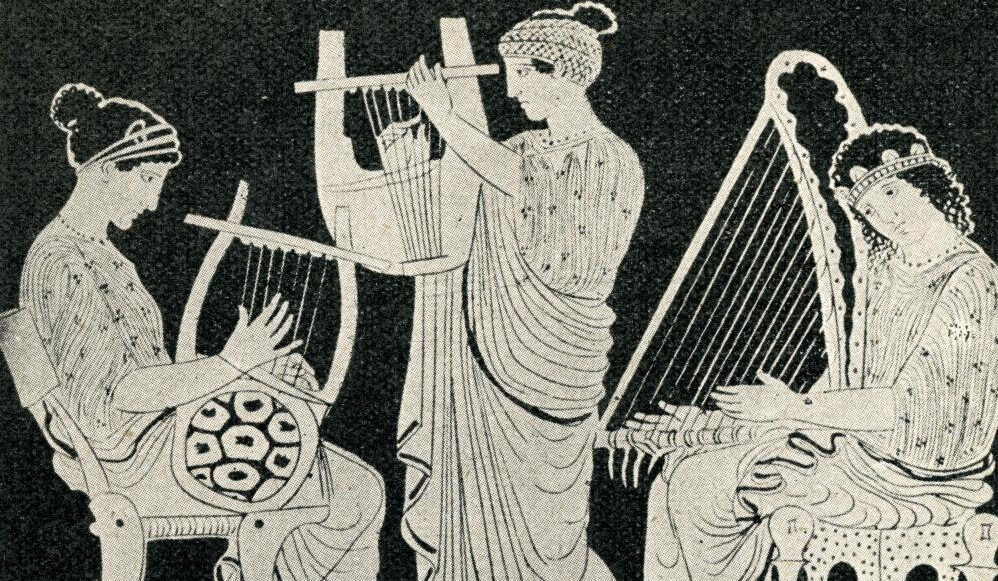
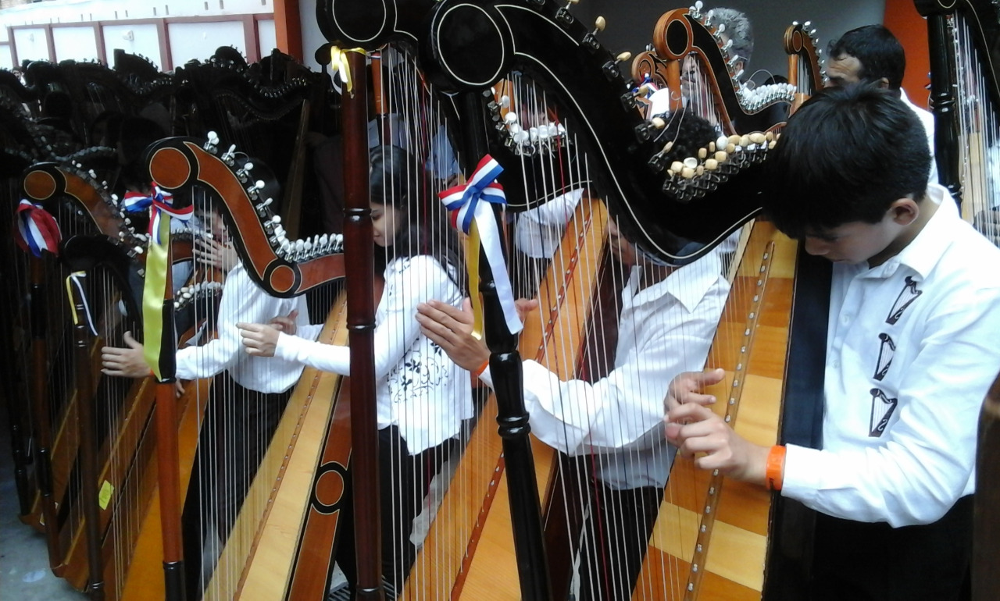
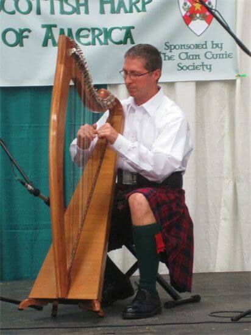

El Arpa.
Alrededor del año 3.000 A.C. aparecen representaciones de arpas en sellos y placas de la antigua Mesopotamia, así como 4 ejemplos de liras (parientes cercanos del arpa) encontradas en tumbas en la ciudad de Ur. Hacia el 2.700 a.C. existen testimonios de su presencia en Egipto, donde tenemos noticias de que tuvo un relevante papel dentro del ambiente musical de la alta sociedad. Los antiguos escritos hebreos mencionan también su presencia, si bien no tenemos testimonios directos que nos indiquen como eran los modelos de la antigua cultura hebrea.

Orígenes y tipos.
Alrededor del año 3.000 A.C. aparecen representaciones de arpas en sellos y placas de la antigua Mesopotamia, así como 4 ejemplos de liras (parientes cercanos del arpa) encontradas en tumbas en la ciudad de Ur. Hacia el 2.700 a.C. existen testimonios de su presencia en Egipto, donde tenemos noticias de que tuvo un relevante papel dentro del ambiente musical de la alta sociedad. Los antiguos escritos hebreos mencionan también su presencia, si bien no tenemos testimonios directos que nos indiquen como eran los modelos de la antigua cultura hebrea.
Dentro de las sociedades griega y romana, el arpa mantuvo un papel discreto, en cualquier caso parece clara la existencia de algún modelo vinculado a la cultura asiria, que también habría sido adoptado en Egipto.
A partir de la Edad Media se convierte en uno de los instrumentos predilectos de trovadores y minnesänger, de tal forma que tiene una aceptación extraordinaria en la música de la época. Su uso comienza por hacerse corriente en los “países celtas” hacia el siglo VIII o IX, donde acompañaba a la poesía. Su uso se hace tan importante en esta zona, que aún hoy en día Irlanda incluye el arpa en su enseña nacional.
Posteriormente llega a ser un instrumento solista de importancia, al que se le otorgan las cualidades de “viril y noble”. Hacia el siglo XV, comienza a perder importancia a favor del laud, con excepción de los arpistas irlandeses, que florecen con buena consideración social durante el siglo XVI y parte del XVII, aunque la tradición acaba sucumbiendo a la persecución inglesa, que en el contexto de la lucha entre católicos y protestantes, considera el arpa irlandesa un símbolo y decide quemar todas cuantas encuentra a su paso. Por ello, son escasísimos los ejemplares antiguos que encontramos hoy en día en las Islas Británicas.
El último gran representante de la tradición irlandesa es Toirdhealbhach Ó Cearbhalláin, más conocido por su nombre anglizado, Turlough O’Carolan (1670-1738), arpista y compositor ciego de gran prestigio en cuya música se mezcla la tradición popular centenaria irlandesa junto con el ambiente culto barroco de su propio momento histórico. Gran parte de sus composiciones llegaron hasta nosotros y forman parte del repertorio usual de los arpistas actuales.
Mientras tanto, en el resto de Europa la popularidad del arpa cae, en gran parte por su dificultad para adaptarse a las nuevas características cromáticas de la música culta. El primer intento serio de afrontar este problema nace hacia 1580, con el nacimiento del “arpa doppia” italiana (aunque se discute un posible origen irlandés), un arpa con dos filas de cuerdas, una de ellas diatónica y la otra cromática. Para ella compone Monteverdi el acompañamiento del tercer acto de su Orfeo (1607). La ampliación siguiente, en el siglo XVII, será el arpa galesa de 3 órdenes; 3 filas de cuerdas paralelas, donde las dos filas exteriores son diatónicas y la interior cromática. En España, el arpa barroca de dos órdenes, con dos hileras de cuerdas cruzadas en el medio, goza de bastante popularidad durante los siglos barrocos, pero su uso decae y la lleva al olvido rápidamente. Sólo la labor de Pedro y Nuria Llopis, trabajando sobre restos de modelos antiguos ha permitido su recuperación en las últimas décadas del siglo XX.
El Arpa en América.
 De los modelos antiguos diatónicos, con una única fila de cuerdas, derivan los modelos actuales de Arpa Sudamericana. El arpa fue llevada a América por los colonos españoles, especialmente por las misiones de Jesuitas, y se extendió rápidamente por todo el continente, convirtiéndose en la actualidad en el instrumento nacional de algunos países como Paraguay. El arpa sudamericana tiene una única fila de cuerdas diatónica, y se toca con las uñas.
El paso final a la adaptación cromática del arpa se da en la última década del s. XVII, cuando un constructor bávaro diseña un sistema de pedales que, mediante una transmisión por cables, regula la acción de unos ganchos en la consola que suben y bajan un semitono a las cuerdas. Esta arpa “de acción simple” tiene 7 pedales, uno por cada nota de la escala, con dos posibles posiciones. A partir de 1720 se impone su uso en Alemania, y unos 30 años después, conquista Francia. Para este modelo de arpa compone Mozart su Concierto para Flauta y Arpa en 1778.
Remodelo del arpa.
 Sobre este modelo se hacen numerosos experimentos (añadir doble número de pedales, una sordina accionable mediante pedal…) hasta que finalmente el fabricante de pianos Sebastien Erard presenta en París en 1811 el modelo de arpa de “doble acción”, que permite 3 posiciones en cada uno de los 7 pedales: bemol, becuadro y sostenido. Con pequeñas modificaciones, esta es el arpa de orquesta que se utiliza hoy en día.
En lo referente al arpa celta, su configuración actual viene principalmente del renacimiento del instrumento irlandés, desaparecido casi totalmente en el siglo XVIII y reaparecido en el s.XX. Su diseño actual incorpora las llaves semitonales (llamadas también “levers”, “semitonos” o “ganchos”) que derivan de una evolución tirolesa del s.XVI que lograba elevar un semitono la nota mediante un gancho que la apretaba al girarlo.
Si bien las arpas celtas en origen tienen cuerdas de metal (o tripa en algún caso), y su caja esta excavada en una gran pieza de madera, actualmente su fabricación se basa más habitualmente en una caja hecha por tablas ensambladas, siendo habituales las cuerdas de metal, tripa o, muy comúnmente hoy en día, de nylon.
Su extensión geográfica actual comprende las islas británicas (especialmente Irlanda y Escocia) y es también especialmente popular en Francia (sobre todo en la Bretaña, donde recibe el nombre de Telenn). En Estados Unidos y en Canadá hay también un buen número de arpistas “celtas”, principalmente (aunque no únicamente) vinculados a grupos populares que interpretan música de su ascendencia europea.
En la recuperación del instrumento y su difusión en los últimos 40 años cabe destacar la labor de músicos como Derek Bell, arpista de The Chieftains, recientemente desaparecido y de Alan Stivell, arpista bretón que realizó una enorme labor de difusión con su música. Hoy en día existen numerosas marcas comerciales que desarrollan modelos de arpa celta (Salvi, Camac, Aoyama) e infinidad de luthiers que fabrican estos instrumentos en distintos modelos.
En el ámbito peninsular, el número de arpistas es muy reducido, y centrado casi en exclusiva en la mitad norte peninsular. Podemos destacar la existencia en Vigo del único centro donde se imparte enseñanza de arpa celta, la E-Trad de Vigo, donde desde hace algo más de una década imparte clases Rodrigo Romaní, arpista de gran nivel y ex-componente del grupo Milladoiro, y probablemente el que más ha hecho por la introducción del arpa a nivel gallego. Se calcula que en estos años han pasado por la escuela algo más de 200 alumnos de arpa, algunos de los cuales luego han formado proyectos en solitario. Otros arpistas a destacar serían Emilio Cao, introductor del instrumento hacia finales de los 70 o Josep Maria Ribelles, arpista catalán con bastante actividad en los últimos años.
{kind=link}
{kind=link}